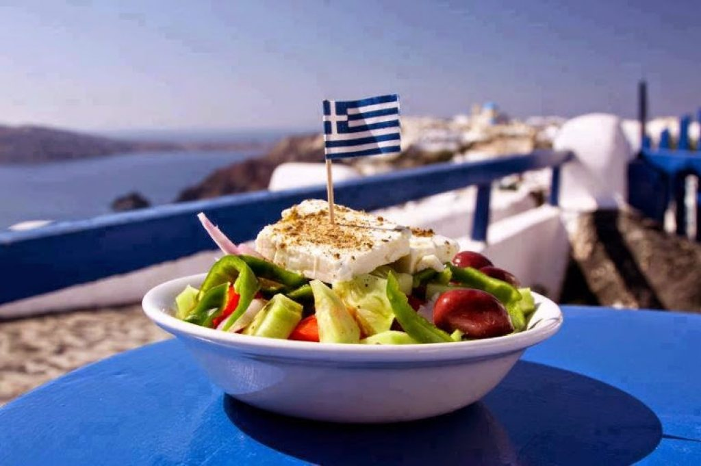
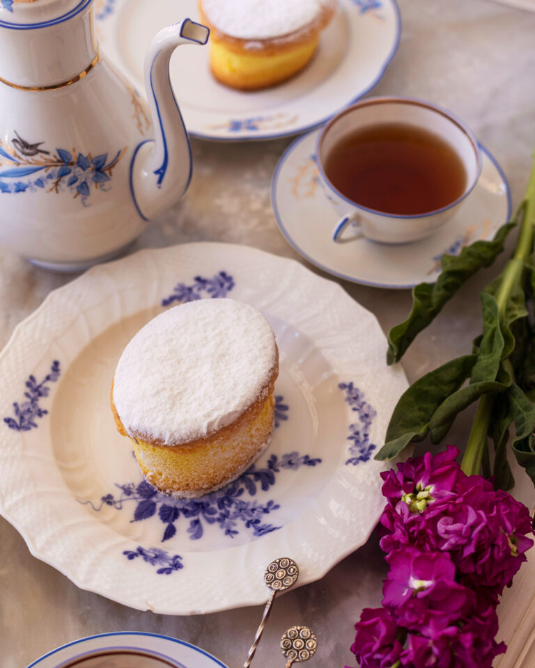
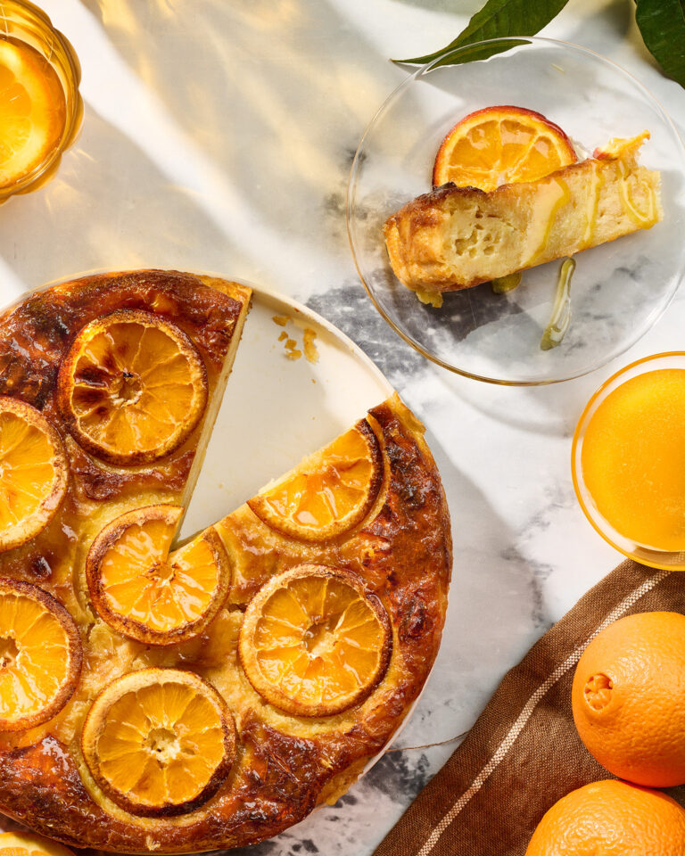
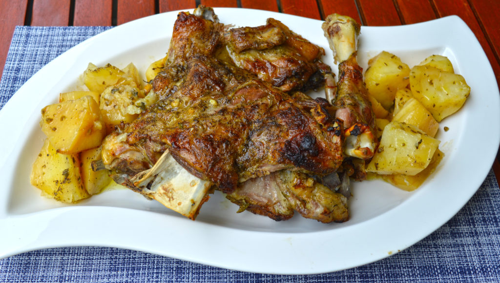
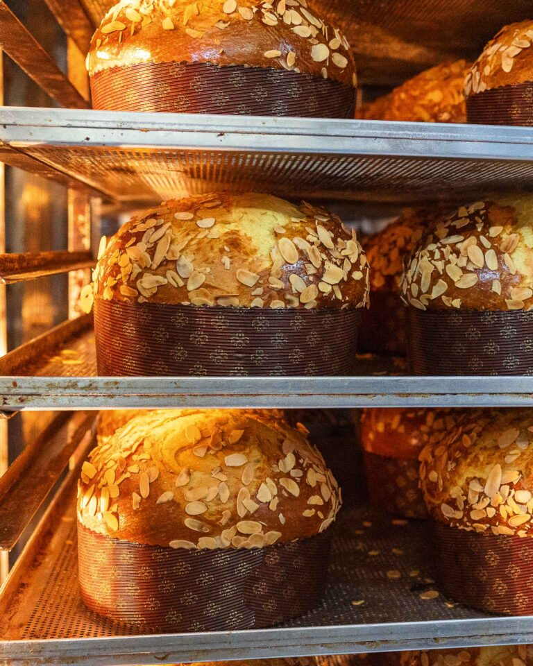

Χωριάτικη σαλάτα

- Προετοιμασία Ντομάτας: Σε μια πιατέλα απλώνουμε 3 μέτριες ντομάτες κομμένες σε χοντρές
φέτες, τις πασπαλίζουμε με λίγο αλάτι και τις αφήνουμε να αρωματιστούν και να βγάλουν λίγα
υγρά.
- Προετοιμασία Λαχανικών: Κόβουμε 1 μικρό κρεμμύδι σε λεπτές φέτες, 1 μέτριο αγγούρι σε λεπτές
φέτες, 2 πιπεριές κέρατα πράσινες σε λεπτά μπαστουνάκια. Ψιλοκόβουμε τα φύλλα από 10
κλωνάρια μαϊντανού και 2 κουτ. σούπας φρέσκο βασιλικό.
- Συναρμολόγηση Σαλάτας: Προσθέτουμε τα λαχανικά και τα μυρωδικά στις ντομάτες,
αλατοπιπερώνουμε και ανακατεύουμε απαλά.
- Προσθήκη Υλικών: Σκορπίζουμε 6-8 ελιές θρούμπες (χοντροκομμένες και χωρίς κουκούτσι), 1
κουτ. σούπας κάππαρη (καλά ξαλμυρισμένη και στραγγισμένη) και 200 γρ. φέτα (κομμένη σε
μέτριους κύβους).
- Δημιουργία Σάλτσας: Περιχύνουμε με 80 ml ελαιόλαδο και 2 κουτ. σούπας ξίδι, πασπαλίζουμε με
1 κουτ. γλυκού ρίγανη, 1/2 κουτ. γλυκού μαυροκούκι και 1/4 κουτ. γλυκού σουμάκ.
- Σερβίρισμα: Ανακατεύουμε καλά και σερβίρουμε την σαλάτα.
Παντεσπάνια «της λεχώνας», από την Κέρκυρα

- Χωρίζουμε 5 αυγά σε κρόκους και ασπράδια. Χτυπάμε τους κρόκους με 115 γρ. ζάχαρη, προσθέτοντας
σταδιακά 20 ml νερό, μέχρι να αφρατέψουν και να τριπλασιαστούν σε όγκο.
- Προσθέτουμε 170 γρ. αλεύρι για όλες τις χρήσεις και το ενσωματώνουμε απαλά με σπάτουλα. Σε
καθαρό κάδο, χτυπάμε τα ασπράδια μέχρι να γίνουν σφιχτή μαρέγκα, και την προσθέτουμε στο μείγμα
των κρόκων σε δύο δόσεις, με απαλές κυκλικές κινήσεις.
- Βουτυρώνουμε και αλευρώνουμε 5 ατομικά φορμάκια (διάμετρος 6 εκ., ύψος 8 εκ.), τα γεμίζουμε
ισομερώς με το μείγμα και ψήνουμε σε προθερμασμένο φούρνο στους 200°C, στις αντιστάσεις, για
20-25 λεπτά.
- Αφήνουμε τα παντεσπάνια να κρυώσουν και τα πασπαλίζουμε με ζάχαρη άχνη πριν το σερβίρισμα.
Πορτοκαλόπιτα ζουμερή

- Βράζουμε 500 γρ. ζάχαρη, 400 ml νερό, 300 ml χυμό πορτοκαλιού και 1 ξυλάκι κανέλας για 5'.
Αποσύρουμε, ρίχνουμε προαιρετικά 2 κ.σ. ποτό (γκραν μαρνιέ, κουαντρό ή ρούμι), και αφήνουμε να
κρυώσει.
- Προθερμαίνουμε τον φούρνο στους 170-180°C αέρα. Κόβουμε 450 γρ. φύλλα κρούστας σε λωρίδες 1 εκ.,
τα «αφρατεύουμε» και τα αφήνουμε σε μπολ.
- Χτυπάμε 6 αυγά με 330 γρ. ζάχαρη, προσθέτουμε 400 γρ. γιαούρτι, 150 ml λιωμένο βούτυρο, ξύσμα
από 2 πορτοκάλια και 1 κ.σ. μπέικιν πάουντερ. Ρίχνουμε στα φύλλα και ανακατεύουμε καλά.
- Αδειάζουμε σε βουτυρωμένο ταψί 25x35 εκ., ψήνουμε 30-40' μέχρι να ροδίσει. Περιχύνουμε με το
κρύο σιρόπι, αφήνουμε 2 ώρες να τραβήξει και σερβίρουμε.
Μακαρόνια κολομπίμπιρι

- Σε μεγάλη κατσαρόλα ζεσταίνουμε 100 ml ελαιόλαδο και σοτάρουμε 1 ψιλοκομμένο ξερό κρεμμύδι με 1
κ.σ. καυτερή πάπρικα για 3-4’, μέχρι να κοκκινίσει το λάδι.
- Ρίχνουμε 1,5 λίτρο ζεστό νερό, 2 γεμάτες κ.σ. πελτέ ντομάτας και αλάτι, κι αφήνουμε να βράσει σε
δυνατή φωτιά μέχρι να λιώσει σχεδόν το κρεμμύδι και η σάλτσα να μειωθεί στο ⅔.
- Σπάμε 500 γρ. σπαγκέτι Νο 5 ή 6 στη μέση, τα ρίχνουμε στην κατσαρόλα και τα βράζουμε μέχρι να
μαλακώσουν πολύ, αλλά να μείνουν με ζουμί (είναι σούπα!).
- Διορθώνουμε το αλάτι, σερβίρουμε σε βαθιά πιάτα και κόβουμε τα μακαρόνια μέσα στο πιάτο με
πιρούνι ή μαχαιράκι για να τα πιάνει το κουτάλι.
Αρνάκι με πατάτες στον φούρνο

- Προθερμαίνουμε τον φούρνο στους 180°C. Αλατοπιπερώνουμε 2 κιλά αρνί (κότσια, μπούτι ή σπάλα, σε
μερίδες) και το βάζουμε σε ταψί μαζί με 6 πατάτες καθαρισμένες και κομμένες κυδωνάτες.
- Αλατοπιπερώνουμε και τις πατάτες, περιχύνουμε με 250 ml ελαιόλαδο και σκεπάζουμε καλά με
λαδόκολλα.
- Ψήνουμε για 2 ώρες και 15 λεπτά, μέχρι να μαλακώσουν καλά το κρέας και οι πατάτες.
Φογάτσα: το κερκυραϊκό τσουρέκι

- Μείγμα μαγιάς: Σε μπολάκι, ανακατεύουμε 15 γρ. ξηρή μαγιά, 20 ml χλιαρό νερό και 15 γρ. ζάχαρη.
Αφήνουμε 20 λεπτά να αφρίσει.
1ο ζυμάρι: Στον κάδο του μίξερ με το φτερό χτυπάμε 300 γρ. αλεύρι για τσουρέκι με 130 ml νερό
για 5'. Προσθέτουμε το μείγμα μαγιάς και συνεχίζουμε 5'. Ρίχνουμε 60 γρ. ζάχαρη σε 3 δόσεις,
χτυπώντας κάθε φορά. Αλλάζουμε σε γάντζο και ρίχνουμε 90 γρ. βούτυρο αγελαδινό σε 3 δόσεις (5-8'
η κάθε μία). Προσθέτουμε 60 γρ. κρόκους (3 αυγά) επίσης σε 3 δόσεις. Ζυμώνουμε μέχρι να γίνει
λείο. Μεταφέρουμε σε μπολ, σκεπάζουμε και αφήνουμε 1 ώρα να τριπλασιαστεί.
2ο ζυμάρι: Ανακατεύουμε σε μπολ 15 γρ. μέλι δάσους, ξύσμα από 2 πορτοκάλια + ½ λεμόνι και 5 ml
μπράντι. Βάζουμε το 1ο ζυμάρι στον καθαρό κάδο, προσθέτουμε 200 γρ. αλεύρι για τσουρέκι και 25
ml από τα 50 ml νερό, ζυμώνουμε 5'. Ρίχνουμε 85 γρ. ζάχαρη και το μείγμα μελιού εναλλάξ σε 3
δόσεις. Προσθέτουμε 65 γρ. βούτυρο σε 3 δόσεις. Αλλάζουμε σε γάντζο, προσθέτουμε 40 γρ. κρόκο (2
αυγά) σε 3 δόσεις. Ρίχνουμε 8 γρ. αλάτι και τα υπόλοιπα 25 ml νερό, ζυμώνουμε μέχρι να γίνει
λείο και μεταξένιο. Αφήνουμε να ξεκουραστεί 15'.
- Μεταφέρουμε σε μπολ, σκεπάζουμε και αφήνουμε 20-40’ να αρχίσει να φουσκώνει. Κόβουμε ένα κομμάτι
σαν πορτοκάλι, το βάζουμε σε ποτήρι (μετρητής). Πλάθουμε το υπόλοιπο σε μπάλα και το τοποθετούμε
σε χάρτινη φόρμα για πανετόνε (διάμ. 20,5 εκ., ύψος 6,5 εκ.). Χαράσσουμε σταυρό στην επιφάνεια
και σκεπάζουμε.
- Όταν το ζυμαράκι στο ποτήρι διπλασιαστεί, προθερμαίνουμε φούρνο στους 140-150°C. Αλείφουμε τη
φογάτσα με 1 κρόκο + 1 κ.γ. γάλα και πασπαλίζουμε με 2-3 κ.σ. φιλέ αμυγδάλου. Ψήνουμε για 55-65
λεπτά.
- Μόλις βγει, τη διαπερνούμε με 2 μεταλλικές σούβλες 1-2 εκ. πάνω από τη βάση, την
αναποδογυρίζουμε και την αφήνουμε να κρυώσει έτσι (κρεμαστή) για 8-10 ώρες. Έπειτα αφαιρούμε τις
σούβλες και σερβίρουμε.
 Spoon Theory
Spoon Theory